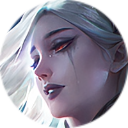

璃 Carmilla
背景故事
暮色之影 卡米拉（Carmilla）出生于阿伯林城堡（Castle Aberleen）的安萨克家族（House Ansaac）。作为伯爵唯一的女儿，她自出生起便备受全家宠爱。长大后，显赫的家世加之迷人的美貌，使她成为阿伯林城堡乃至整个帝国最炙手可热的贵族少女之一。然而，她高贵的出身注定与悲剧相连——她将成为父亲安萨克伯爵（Earl Ansaac）的政治工具，通过联姻另一个权势家族来巩固权力。 尽管无数贵族前来求爱，却无一人能讨她欢心。天生的骄傲让她拒绝向平庸低头。她所渴望的，是一个能与她灵魂相通的人。但她的父亲安萨克伯爵早已做出了决定。随着深渊（Abyss）的威胁步步逼近，他深知新兴的军功贵族阶层将主导这片土地的政治。因此，他必须与他们建立良好关系，以维持家族的社会地位。 然而，一个在老伯爵眼中无足轻重的人破坏了这一计划。此人正是塞西利昂（Cecilion），帝国南方最出色的歌剧演唱家。自塞西利昂来到阿伯林城堡的第一天起，卡米拉便成为他最忠实的观众。在卡米拉眼中，他是那般优雅而富有才华，而她也能从他的眸中读出忧郁与神秘。每一次塞西利昂的演出，卡米拉都会坐在礼堂中右区的中间位置，静静欣赏他的歌声。 一日，帷幕落下，塞西利昂与卡米拉四目相对。激情的火焰在两人之间点燃。如同划破暗夜苍穹的一道闪电，他们瞬间坠入爱河。 随后的日子，是卡米拉生命中最快乐的时光。夜幕降临，塞西利昂盛装前来邀她前往歌剧院，唱起为她谱写的歌曲。卡米拉全神贯注地看着他的表演，目光从未离开他。演出结束后，他们在后台相会，在月光下共舞。清晨时分，塞西利昂会在卡米拉的窗台上放下一朵被晨露浸润的玫瑰，然后悄然离去。 随着时间推移，卡米拉注意到塞西利昂身上有些异样。他独来独往，从不与人有不必要的接触。他的肌肤总是苍白，即便不施粉黛也是如此；而且他似乎总在躲避着什么。从他的眼中，卡米拉能感受到他对正常生活的渴望，也隐约察觉塞西利昂或许与传说中的血魔一族有所关联。尽管塞西利昂从未向她提起自己的身世，她仍选择相信他，因为她能感到他的爱是真切的。无论他是人还是血魔，那都只是两人之间的爱，卡米拉相信她永远属于塞西利昂，愿与他共度余生。 尽管彼此深爱，卡米拉的父亲伯爵却禁止她嫁给这个卑微的歌手。他将她囚禁，逼迫她嫁给驻扎在阿伯林城堡附近的帝国军队将领塔维尔男爵（Baron Tawil）。为了让卡米拉忘记塞西利昂，伯爵甚至派人关闭了歌剧院。在塞西利昂心中，他明白血魔与人类之间的爱绝无可能。尽管深爱卡米拉，他最终还是决定放弃。离去的当天，他给她写下了一封信，在信中倾诉一切——他的身世、他的故事，并将信与一朵玫瑰一同留在她的窗台。 卡米拉并未停止抗争，她不愿屈服于父亲的意志。但当她读到他那封诀别信时，心碎了。对卡米拉而言，他属于什么种族并不重要。她爱他，没有他，她的生命将失去意义。 她站在窗前，望着塞西利昂离去的方向。黎明将至，她用锋利的匕首划开了自己的手腕。世界陷入无尽的黑暗。卡米拉以她自己的方式，埋葬了这份爱。 当卡米拉醒来，她发现自己再次躺在塞西利昂的怀抱中。他的眼中满是温柔，正凝视着她。接着她发现自己的触感如此冰冷，仿佛失去了生命，而她的肌肤也变得和塞西利昂一样苍白。她明白，她的爱人并未抛弃她，他回来了，并用自己的血让她重生。这两个孤独的灵魂终于再次相聚，得以永远相伴。 那日之后，阿伯林城堡的居民再未见过塞西利昂或卡米拉，只有关于黑夜的传奇，在岁月中口口相传。当夜幕降临，卡米拉依偎在塞西利昂怀中，位于阿伯林城堡最高的塔楼之上，仿佛时光就此凝固。 夜之花 参见主条目：夜之花